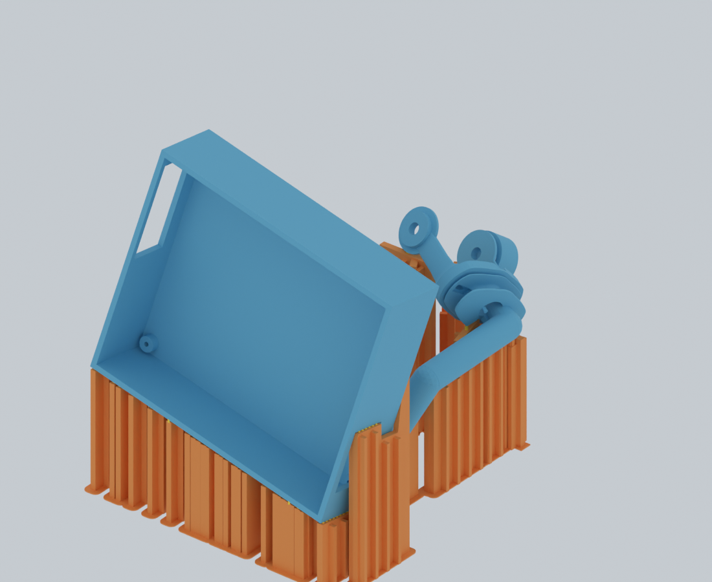

打印与拆除
本页蓝色是保留的原零件，橙色是支撑，黄色是与两侧实体均有实际交叠的连接齿。颜色仅用于识别；打印用同一种 PLA，无需 AMS。每个零件与其支撑在打印文件中已合并成一个实体网格；彩色分区保留在本识别页面中。选择一个零件，再选择连接齿，可以检查局部实际网格。近景裁切仅改变显示。
- 用 OrcaSlicer 打开本盘 3MF 为项目。保持 0.4 mm 喷嘴、0.20 mm 首层与层高，按层打印，自动支撑关闭。
- 保留文件中的朝向、位置和完整对象。不要重新自动朝向、单独落盘支撑或拆分后重排。鳍板已经是实体，切片器的支撑间隙参数不会改变它们。
- 冷却取件后，扶住厚实本体，先剪黄色连接齿，再剪底脚间连片，逐片朝原热盘方向退出。避免扯动配合孔、PCB 滑轨和薄弹片。
- 清除齿痕，按原安装编号分袋；使用实际五金试配，再按 26 步安装教程装配。
这是已撤回 F01 试打建议的 O22-F3 存档版。支撑主体、接触齿与落盘几何检查通过；实际 G-code 仍有 149 处局部区域被标记为与前层缺少覆盖，已提供定位与相邻层图。尚未判定这些位置可可靠打印，也未做实物打印或受力仿真。详情见
验证说明；当前暂停试打 F01，内顶壁需要重新设计支撑。
实际几何示例
胸架最终实际网格。橙色落盘宽鳍带横向加强；黄色连接齿与本体相接。
最终几何 Blender 文件 · 
新版与原版的差异
逐件比较打印角度与实际出丝结果；保留功能轴线和弹片方向。最终 150 种零件本体均保留原形状，详情见验证说明。所有鳍板沿自身垂直路径落到热盘；较高的宽板有横向加强肋。鳍主体不与零件交叠，连接齿才进入本体。每个支撑实体都检查热盘连接及与零件之间的连接。
本次为独立设计的实体支撑，没有采用拓竹自动支撑生成结果。支撑布局与候选朝向通过脚本构造、几何检查和 Blender 可视化反复修正。它们不是受力仿真的结果。
打印盘与装配对照
下载编号对照表 · 最终几何 Blender 文件 · 最终胸架 Blender 文件 · 实际接触点 Blender 文件